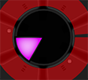

Your Score:
FRENZY
OBJECTIVE
Can you handle the frenzied pace and put the pieces together?! Frenzy is a fast paced game of
strategy and quick analytical thinking. It's easy to learn and impossible to master.
Your objective is simple: fill the 6 empty circles with fitting pie wedges (displayed in the center circle) in order to clear the completed pie and
earn yourself points. The higher the ratio of like colored wedges in a completed pie, the higher number of
points you're awarded. Completed pies filled with 6 pie wedges of the same color earn the maximum number of points (25)
AND earn you an additional life.
Your enemy is time: Should the timer expire before a wedge is placed, a life is lost. As you fill your pockets with more and more
points, the timer is gradually quickened. Simple.
STRATEGY
Wedge positions are dealt at random. You must negotiate between the temptation to score a maximum number of points and staying alive in order to do so. CAUTION: This is a game of skill, not chance. Your inate skills, quick decision making, stress management determine how long you'll last - not the God of Wedges.
CONTROLS
-
Start button.
-
Quit button.
- 
Center area. Clicking the center area passes to the next wedge, costing you 1 life. Use the center to pass when the wedge position is not playable. You may also avoid the center all together and just wait out the time.
-
Radioactivity. Clears all pies and points are scored for EVERY pie piece placed